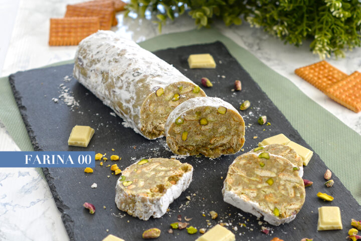

SALAME DI CIOCCOLATO
BIANCO E PISTACCHI

porzione per 6 persone, difficoltà 1/5
| INGREDIENTI | QUANTITÀ |
|---|---|
| Biscotti secchi | 150gr |
| Burro | 200 g |
| Zucchero a velo | 40 g |
| Crema di pistacchio | 200 g |
| Cioccolato bianco | 200 g |
| Pistacchi interi | 100 g |
PROCEDIMENTO
- Sbriciolare a mano i biscotti secchi
- Mescolare il burro a temperatura ambiente e lo zucchero con una frusta in una ciotola
- Aggiungere gradualmente la crema di pistacchio e il cioccolato bianco sciolto
- Aggiungere i biscotti sbriciolati e i pistacchi interi
- Mescolare per ottenere un impasto omogeneo
- Prendere della pellicola trasparente e rovesciare l’impasto
- Modellare l’impasto in modo da ottenere una forma cilindrica e avvolgere nella carta stagnola
- Chiudere i lembi della carta stagnola “a caramella” e mettere nel frigorifero per minimo 1 ora
- Srotolare il salame, tagliare a fette e servire